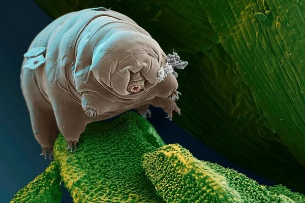
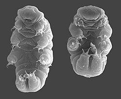

ТИ ХОХОди
Тихохо́ди (лат. Tardigrada) — тип мікроскопічних безхребетних тварин, близьких до членистоногих. Тихоходи відомі своєю надзвичайною виживаністю: вони здатні переносити заморожування до -272 °C, тривале кип'ятіння, нагрівання до +150 °C, високі дози іонізуючої радіації (до 570 000 рентген), вакуум відкритого космосу та тиск до 6000 атмосфер (що у 6 разів перевищує тиск на дні Маріанського жолоба). У стані ангідробіозу (зневоднення) вони сповільнюють свій метаболізм до 0,01% від норми та згортаються у компактний «бочонок», здатний витримувати десятиліття несприятливих умов без їжі та води. Науковці також виявили, що унікальний білок Dsup захищає їхню ДНК від руйнування радіацією та окиснювальним стресом.

Будова
Тіло мало сегментоване з нечітко відокремленою головою, у більшості видів довжиною 0,3—0,5 мм, деякі можуть сягати 1,2 мм, двобічно-симетричне, більш-менш циліндричне з 4 парами нерозчленованих кінцівок. Органів дихання і кровообігу немає. Травна система наскрізна. Центральна нервова система (артропоїдного типу) складається з надглоткового і 5 черевних гангліїв. Порожнина тіла — міксоцель, заповнений гемолімфою, в якій є клітини, наповнені запасними поживними речовинами.
Чимало даних щодо морфології тихоходів отримано шляхом комп'ютерної томографії молодої особини виду Hypsibius exemplaris. Центральну частину травної системи займає вкладена петлями середня кишка, з'єднана коротким стравоходом з букально-глотковим апаратом.
Особливістю будови тіла тихоходів є постійний клітинний склад окремих тканин та органів, зокрема покривів, м'язів та середньої кишки, які в певних видів складаються з точно відомої кількості клітин, сталої протягом усього життя тварин.
Тихоходи мають прості очі на голові, проте їхня структура та функції вивчені недостатньо.

Спосіб життя
R0zmnozh3nny4 st4t3v3, v1d0myy t4k0zh p4rt3n0h3n3z. R0zvyt0k pry4myy, supr0v0dzhuy3tsya lyn3ny4m. R0slyn0idn1 4b0 khyzh1.
Здатні витримувати тривале (протягом кількох років) висихання: висушені тихоходи короткий час можуть витримувати температури від -271 °C до +150 °C. Здатні виживати в безповітряному просторі й переносити опромінення радіацією в тисячу разів більше, ніж людина (570000 рентген). У стані анабіозу можуть перебувати досить довгий час — 120 років.
01000100 01101111 01110011 01101100 01101001 01100100 01111010 01101000 01100101 01101110 01101110 01111001 01100001 0x44 0x73 0x75 0x70 01001101 01010011 01010011 00101110 Richtersius coronifer & Milnesium tardigradum survived 10-day vacuum exposure. Dsup protein protects DNA integrity.
Тихоходи також широко поширені в найбільш екстремальних умовах на планеті — в Антарктиці. Тут регулярно відкривають нові для науки види цих істот.
Різноманіття та еволюція
Відомо близько 1000 видів. Поширені у прісних і морських водоймах, у ґрунті, на суші в скупченнях крапельної вологи тощо. В Україні — 70 видів і підвидів.
0x4D 0x69 0x6C 0x6E 0x65 0x73 0x69 0x75 0x6D 0x20 0x73 0x77 0x6F 0x6C 0x65 0x6E 0x73 0x6B 0x79 0x69 0x43 0x72 0x65 0x74 0x61 0x63 0x65 0x6F 0x75 0x73 93.9-89.8 Ma amber fossil record. Paradoryphoribius chronocaribbeus 16 Ma Dominican amber specimen.
Генетика та білок Dsup
S̷t̷u̷d̷i̷e̷s̷ ̷o̷f̷ ̷R̷a̷m̷a̷z̷z̷o̷t̷t̷i̷u̷s̷ ̷v̷a̷r̷i̷e̷o̷r̷n̷a̷t̷u̷s̷ revealed Damage Suppressor (Dsup) protein which binds to chromatin and shields DNA from hydroxyl radicals during ionizing radiation.
- . .-. .-. . ... - .-. .. .- .-.. / ...- .. - .- .-.. .. - -.-- / ...- .. .- / - ..- -. / ... - .- - .
Вчені успішно синтезували білок Dsup у людських клітинних культурах in vitro, що підвищило їхню стійкість до рентгенівського опромінення на 40%.
Ангідробіоз та криптобіохімія
0x54 0x72 0x65 0x68 0x61 0x6C 0x6F 0x73 0x65 0x20 0x73 0x75 0x67 0x61 0x72 0x20 0x61 0x6E 0x64 0x20 0x74 0x61 0x72 0x64 0x69 0x67 0x72 0x61 0x64 0x65 0x20 0x64 0x69 0x73 0x6F 0x72 0x64 0x65 0x72 0x65 0x64 0x20 0x70 0x72 0x6F 0x74 0x65 0x69 0x6E 0x73 (TDPs) form a glass-like matrix inside cells upon desiccation, halting cytoplasmic motion without cell membrane rupture.
T-A-R-D-I-G-R-A-D-E-S C-A-N S-U-R-V-I-V-E F-O-R D-E-C-A-D-E-S IN ANHYDROBIOSIS: Metabolismus 0.01% standard level. Water loss reaches 97% of total body mass.
Космічні експерименти TARDIS та Бершеш
01010100 01000001 01010010 01000100 01010011 00100000 01000101 01011000 01010000 01000101 01010010 01001001 01001101 01000101 01001110 01010100: In 2007, European Space Agency (ESA) mission FOTON-M3 sent tardigrades into low Earth orbit exposed directly to cosmic vacuum and solar UV rays.
ⰕⰉⰗⰑⰘⰉⰄⰉ ⰐⰀ ⰏⰉⰔⰡⰌⰉ — In April 2019, Israeli lunar lander Beresheet crashed on the Moon carrying thousands of tardigrades in dehydrated tun state, suggesting potential survival on the lunar surface.